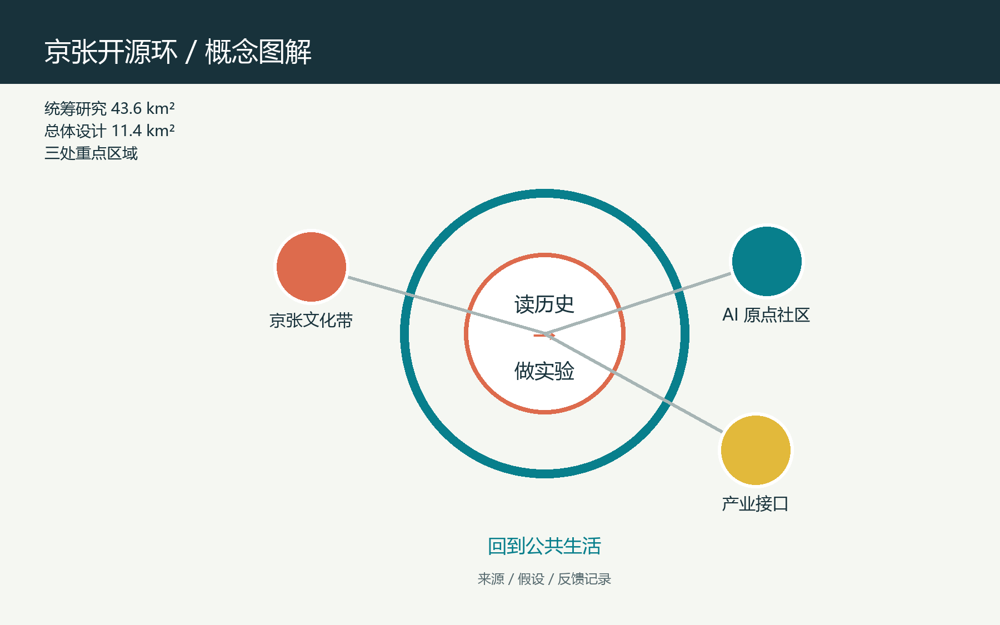
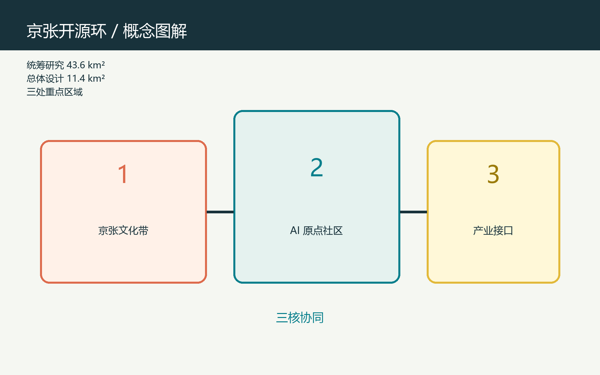
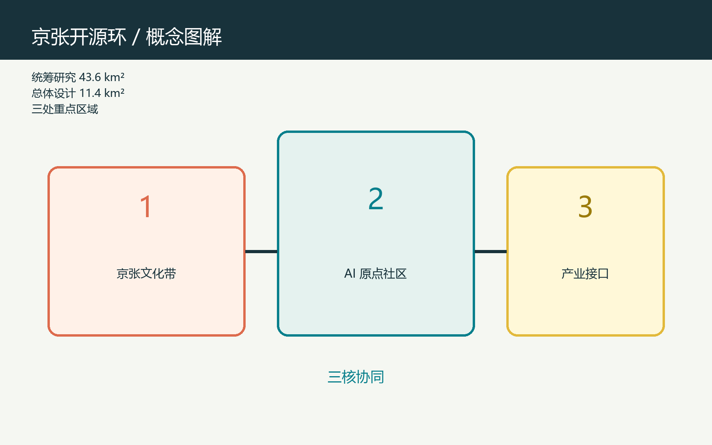
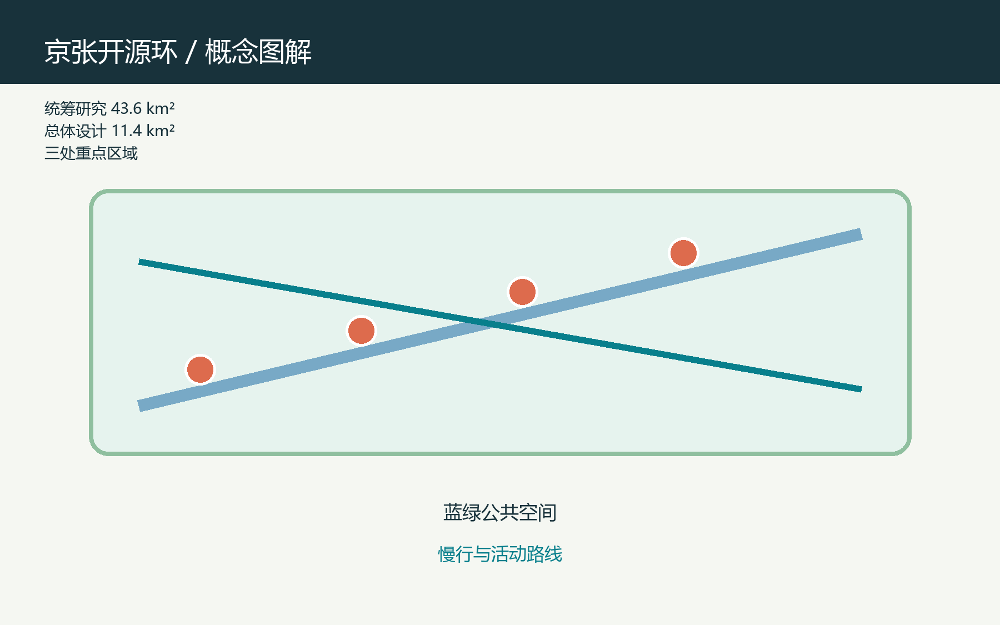
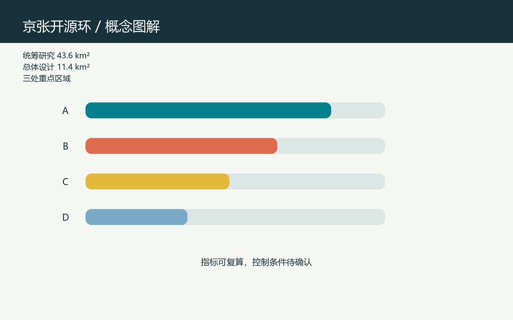

Jingzhang Resonance: Co-evolving with AI
A public AI innovation belt organized around Jingzhang railway heritage, the AI Origin Community, and an open-loop model of public experimentation.
Jingzhang Resonance: Co-evolving with AI
0. Core concept
The proposal translates the spirit of independent railway innovation into an urban operating model: people can read history, run experiments, and bring validated results back into daily life.
This is a conceptual reference proposal for the open call. It does not replace statutory planning, approvals, or engineering design.
Design Basis and Source List
The proposal uses the public brief, the Agent taskbook, the public-source registry, and the provisional spatial package in the activity repository. Key evidence references are [source:OFFICIAL-ANNOUNCEMENT], [source:AGENT-TASKBOOK], [source:SOURCE-REGISTRY], and [source:PROCESSED-FACT-PACK].
Several official polygons, regulatory controls, cadastral data, heritage controls, road redlines, and municipal conditions are not yet publicly available in the site package. The submitted geometry is therefore provisional and must be recalculated when official data is released.
Original mechanism: the Jingzhang Open Loop
The proposal does not treat AI as a screen, robot, or one-off exhibition. It introduces the Jingzhang Open Loop:
read history -> run experiments -> return to public life
- Read history: make railway engineering, collaboration, and independent innovation legible in public heritage spaces.
- Run experiments: host low-speed, supervised, human-reviewable AI scenarios in Zhongzhiyuan and the AI Origin Community.
- Return to public life: turn explained, reviewed, and publicly discussed results into daily services, cultural activities, and spatial improvements, while recording the next questions.
In this model, “open source” becomes an urban operating method rather than only a GitHub submission method. Each node has a public question, participants, a testing boundary, a feedback entry, and an iteration record.
The proposal avoids generic slogans such as “smart brain” or “future living room”. Every major claim is connected to a spatial action, a user scenario, an operating role, a data boundary, and a verifiable indicator.
Three-Level Scope Framework
The three levels connect the 43.6 square kilometer coordinated research area, the 11.4 square kilometer overall design area, and the 368.4 hectare key-area scope into one evidence chain: the upper level addresses ecosystem and cultural strategy, the middle level addresses renewal, mobility, and public space, and the key areas test concrete scenarios and operating dependencies [source:OFFICIAL-ANNOUNCEMENT] [source:AGENT-TASKBOOK] [data:geometry/site_boundary.geojson#SITE-001] [depth:three_level_scope_framework]. The current boundary is provisional and all metrics, drawings, and phasing must be recalculated after official data is released.
Coordinated Research Area: Industry and Future City Research
Approximately 43.6 square kilometers. This level studies the relationship between Jingzhang heritage, AI industries, universities, companies, communities, and public services [source:OFFICIAL-ANNOUNCEMENT] [standard:PROJECT-AGENT-OPEN-CALL-TASKBOOK]. The research layer does not add statutory boundaries. It organizes university research, open collaboration, enterprise transfer, public experience, and international communication. It distinguishes public facts, transferable case methods, and conceptual proposals. Compute, data, capital, talent, and open scenarios are treated as organizational questions; no company list, investment amount, output, or government commitment is fabricated. The research layer returns to design through the overall concept, ecosystem map, personas, scenario cards, spatial nodes, and operating indicators.
The research layer does not add statutory boundaries. It organizes university research, open collaboration, enterprise transfer, public experience, and international communication. It distinguishes public facts, transferable case methods, and conceptual proposals. Compute, data, capital, talent, and open scenarios are treated as organizational questions; no company list, investment amount, output, or government commitment is fabricated.
Overall Design Area: Urban Renewal and Regulatory-Plan-Level Urban Design
Approximately 11.4 square kilometers around the Jingzhang Heritage Park and adjacent urban and industrial areas. This level translates the ecosystem into land use, public space, walking, renewal projects, and operating nodes [source:OFFICIAL-ANNOUNCEMENT] [data:geometry/land_use.geojson#LU-001] [depth:overall_spatial_structure]. The renewal logic is “retain memory, repair connections, open testing, and keep feedback”. Land use, buildings, roads, green space, public space, and phasing express spatial relationships, not statutory controls. Building scale, intensity, height, setbacks, demolition-retention decisions, and service capacity remain subject to official planning, ownership, heritage, fire-safety, and municipal data. The submitted model is useful for professional discussion and later recalculation, not a substitute for approved controls.
The renewal logic is “retain memory, repair connections, open testing, and keep feedback”. Land use, buildings, roads, green space, public space, and phasing express spatial relationships, not statutory controls. Building scale, intensity, height, setbacks, demolition-retention decisions, and service capacity remain subject to official planning, ownership, heritage, fire-safety, and municipal data.
Detailed Design of Key Areas
| Area | Role | Spatial action | AI focus |
|---|---|---|---|
| Zhongzhiyuan AI Acceleration Area | A verifiable innovation workplace | Use green space to organize R&D, testing, standards, and industry display | Model testing, standards workshops, low-carbon compute experience |
| Beijing AI Origin Community | An innovation living room for daily life | Connect campuses, parks, and streets; add talent services, publishing, and open collaboration | Open-source publishing, knowledge transfer, community learning |
| Dazhongsi AI Industry Cluster | An interface between industry and city life | Improve walking connections, commercial services, and international exchange around the station area | Intelligent products, international pitching, content and retail |
All three areas use the repository's provisional geometry [data:geometry/key_areas.geojson#PROV-KEY-001] [data:geometry/key_areas.geojson#PROV-KEY-002] [data:geometry/key_areas.geojson#PROV-KEY-003] [depth:three_key_area_detailed_design]. Areas, metrics, drawings, and phasing must be recalculated after official boundaries are available. The design answers how Zhongzhiyuan becomes a verifiable innovation workplace, how the AI Origin Community becomes an everyday living room, and how Dazhongsi connects industry display with public life [source:AGENT-TASKBOOK]. Each area addresses uses, building renewal direction, public space, walking, AI scenarios, operating roles, and dependencies. Missing ownership, road, heritage, and municipal conditions remain explicit data gaps.
The key-area design answers three questions: how Zhongzhiyuan becomes a verifiable innovation workplace, how the AI Origin Community becomes an everyday living room accessible to developers and residents, and how Dazhongsi connects industry display with public life. Each area addresses uses, building renewal direction, public space, walking, AI scenarios, operating roles, and dependencies. Missing ownership, road, heritage, and municipal conditions remain explicit data gaps.
3. Spatial structure
The “loop” is not a new statutory boundary. It is a composite working system of heritage reading, walking connections, public space, AI testing, and cultural operations. Its four evaluation questions are: can people read it, reach it, participate in it, and review its results?
The three anchors are:
- Resonance Anchor: heritage memory, engineering stories, and public interpretation.
- Co-creation Anchor: open collaboration, learning, publishing, and talent services in the AI Origin Community.
- Innovation Anchor: testing, display, business services, and international exchange across Zhongzhiyuan and Dazhongsi.
Ten node types support the loop: railway memory entrance, AI time-space guide, developer walking exchange, public-service navigator, community learning workshop, low-speed robot test point, results platform, enterprise question wall, night culture node, and contribution-feedback point.


AI Innovation Ecosystem, Personas, and AI+ Scenarios
The proposed ecosystem follows five linked stages: university research, open collaboration, enterprise transfer, public testing, and international communication [source:AGENT-TASKBOOK] [source:SOURCE-REGISTRY]. Land, space, capital, talent, compute, data, and applications should be organized around public questions: who asks, who supplies evidence, who tests, who reviews, and who returns the result to public life. Case studies are methods to compare, not permission to import other cities' companies, investments, or policies as Haidian facts. Personas, scenario cards, and AI nodes turn the ecosystem into auditable spaces and services.
Five user groups are central: open-source developers, start-ups, university students and researchers, local residents, and city visitors. Their needs are addressed through publishing, learning, testing, walking, cultural interpretation, and community services. Personal trajectories are not collected, resident profiles are not used for commercial recommendations, and research or company material must be separately authorized.
5. Ten AI scenario cards
1. Jingzhang AI time-space guide 2. Developer walking and knowledge exchange 3. AI public-service navigator 4. Human-reviewable accessible walking assistant 5. Community learning and model workshop 6. Low-speed robot delivery test 7. AI-assisted railway heritage exhibition 8. Open work and rest nodes for young teams 9. Enterprise question publishing and scenario matching 10. Night developer and public culture program
Three initial test scenarios are proposed: a supervised low-speed robot public-service test, a source-traceable AI heritage guide, and an anonymous aggregated public-space feedback test. Each requires a defined boundary, human intervention, public opt-out, and a documented review result.
6. Three AI pilgrimage landmarks
- Resonance Station: a cultural entrance organized around “past questions, historical technology, and present responses”.
- Co-creation Platform: a public learning and publishing space that records contributions, questions, and next validation steps.
- Innovation Gate: an interface for industry, international visitors, and authorized demonstrations; it does not imply government endorsement or guaranteed business results.
7. Cultural narrative
The narrative is: “from independently building a railway to jointly maintaining an open innovation belt.” Jingzhang railway heritage supplies memory and values; Zhongguancun supplies research, entrepreneurship, and transfer; AI culture supplies open collaboration, rapid testing, and continuous review.
The signage system combines a timeline, question cards, and contribution records. Each node tells visitors what happened here, what can be joined today, and which conclusions still require professional confirmation.
8. Operations and phasing
- Phase 1: make the loop readable through public-source interpretation, walking experiences, question collection, and small events.
- Phase 2: make experiments controllable through authorized, small-scale and reversible tests with published review records.
- Phase 3: make the community durable through annual events, developer collaboration, open enterprise scenarios, and public feedback cycles.
Suggested programs include Jingzhang Open Source Week, an AI Public Space Experiment Season, Railway and Future City Evenings, and a Global Agent Urban Design Exhibition. These are conceptual suggestions, not confirmed government programs or funding commitments.
Metrics, Area Recalculation, and Compliance Matrix
Metrics are separated into: values recalculable from submitted geometry; values requiring official planning conditions; and operational indicators requiring continuous measurement [metric:site_area_sqm] [metric:green_ratio] [metric:public_space_ratio] [depth:metrics_recalculation]. Unknown controls such as FAR, building height, road redlines, heritage controls, and municipal capacity remain unknown and are recorded as assumptions rather than invented numbers. The compliance matrix links call requirements, Agent.1 through Agent.6, geometry, metrics, drawings, and HTML. The standards matrix and design-depth matrix explain how the key areas, mobility, blue-green space, renewal, and phasing are evidenced. If recalculated geometry and public text areas differ, both are retained with an explanation rather than collapsed into false precision.
The compliance matrix links the call requirements, Agent.1 through Agent.6, geometry, metrics, drawings, and HTML. The standards matrix identifies which claims come from the public taskbook and which are professional deepening directions. The design-depth matrix explains how the three-level framework, key areas, mobility, blue-green space, renewal, and phasing are evidenced. If recalculated geometry and public text areas differ, both are retained with an explanation rather than collapsed into false precision.



Land Use, Building Scale, and Retain-Renovate-Demolish Strategy
The land-use concept uses four layers: heritage interpretation, innovation services, youth-friendly mixed space, and blue-green open space [data:geometry/land_use.geojson#LU-001] [depth:land_use_layout]. These are conceptual layers, not statutory classifications. Buildings are labeled as retain, adaptive renewal, or pending study [data:geometry/buildings.geojson#BLDG-001] [depth:development_intensity_controls]. FAR, height, density, setbacks, and building control lines remain unknown until official conditions are supplied. Any action affecting ownership, heritage buildings, or company-controlled space requires authorization and professional review. If a value cannot be recalculated from geometry, it remains an assumption rather than a fixed number.
Transport, Rail, Municipal Infrastructure, and Public Services
The mobility strategy addresses walking around rail stations, slow-mobility gaps, accessible routes, low-speed connections, and event-day organization [data:geometry/roads.geojson#ROAD-001] [depth:traffic_rail_slow_parking]. The road layer expresses discussion-level walking and public-activity relationships, not road redlines, bridges, tunnels, rail alignments, or engineering design. Municipal and new-infrastructure ideas discuss edge compute, energy, data security, public-service access, and maintenance roles without claiming load, capacity, or underground feasibility [data:geometry/constraints.geojson#CONSTRAINTS] [depth:municipal_new_infrastructure]. AI public services retain human transfer, exception handling, and public opt-out.
Blue-Green Network, Public Space, and Urban Character
The blue-green system uses the heritage park, public activity nodes, and walking links as a framework for access, staying, learning, and low-impact renewal [data:geometry/green_space.geojson#GREEN-001] [data:geometry/public_space.geojson#PUBLIC-001] [depth:blue_green_public_space]. Public space must serve residents, young people, culture, accessibility, and daily rest, not only corporate display. A restrained, maintainable timeline and contribution-record system avoids uncleared historical images, portraits, and logos. Ratios are conceptual recalculations from submitted geometry and must be recomputed when official controls arrive.
Renewal Projects, Implementation Policy, and Phasing
Six project actions structure the renewal list: Resonance Station, Co-creation Platform, Innovation Gate, developer walking loop, AI test points, and contribution-feedback nodes [depth:renewal_project_list] [data:geometry/phasing.geojson#PHASE-001]. Each records a space type, user, operating role, dependency, risk, and evaluation indicator. Phasing follows “readable first, controllable next, durable later” [depth:phasing_implementation]. Policy suggestions cover public data, participation, open scenarios, copyright, collaboration, and professional review; they are not confirmed investment, approval, or government commitments. Ownership, funding, and approval paths remain open professional questions.
Risks, Copyright, and Compliance
Provisional geometry must not be presented as a statutory boundary. The proposal must not use personal data, private company data, unpublished planning material, or uncleared images, fonts, logos, portraits, or maps. AI scenarios require human review, opt-out, safety boundaries, and a feedback route. Conceptual activities, policy ideas, investments, construction phasing, and government commitments must remain clearly labeled as proposals.
The risk matrix should continue to cover privacy, implementation complexity, public acceptance, operations cost, policy uncertainty, spatial disputes, technical maturity, fairness, inclusion, and rights clearance [source:SOURCE-REGISTRY] [depth:risk_missing_data]. Any scenario without a human review path, opt-out, data source, and responsible role remains a research question rather than an implementation suggestion. Provisional geometry, empty constraint layers, and uncleared assets remain visible in assumptions, sources, copyright, and self-check records.
References
The proposal prioritizes the public brief, Agent taskbook, public source registry, and provisional geometry in the activity repository. These are recorded in sources.json with publisher, URL, retrieval date, intended use, and limitations. The processed fact pack is a navigation layer, not a replacement for primary sources. Future external sources must be public or cleared, cross-checked for material claims, and recorded with license, transformation, and uncertainty.
11. Original contribution
The proposal's original contributions are: translating open source into an urban operating method; connecting heritage, AI testing, and daily services through the read-experiment-return loop; assigning a question, boundary, human review, feedback entry, and iteration record to each AI node; organizing the three key areas as mutually reinforcing anchors; and combining originality with verifiability rather than exaggerated technical claims.
12. Iteration status
This is the current local working draft. Structured JSON, GeoJSON, drawings, offline HTML, and the official self-check evidence are being prepared. Final status is determined by the official tools and the submitted Pull Request.